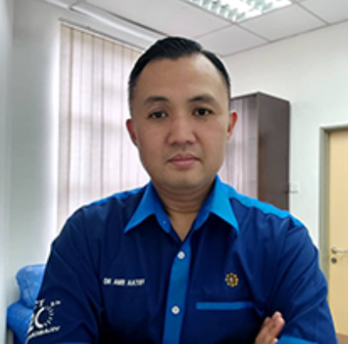

Amelia Ritahani Bt. Ismail (Assoc. Prof. Ts. Dr.)
Amelia Ritahani is our ML specialist, dedicated to addressing concerns of security of ML models when handling sensitive information. With her extensive expertise, she ensures the robustness and privacy of our machine learning solutions.

Amir 'Aatieff Bin Amir Hussin (Dr.)
Amir 'Aatieff, our de-identification expert, leads the exploration of various de-identification methods. His research and guidance contribute significantly to enhancing the privacy and anonymization aspects of our projects.

Faris Farhan bin Azlan
Faris Farhan, our MLOps Engineer, operates at the intersection of ML Deployment, Model Performance, and Data Privacy. He's in charge of the seamless deployment and optimal performance of our machine learning models while maintaining the highest standards of data privacy.